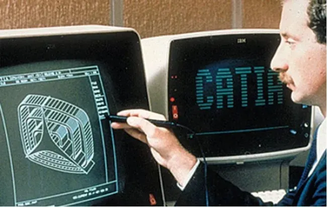
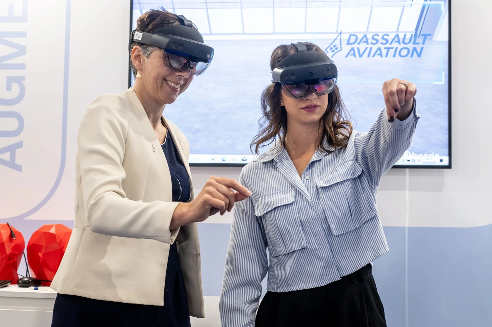
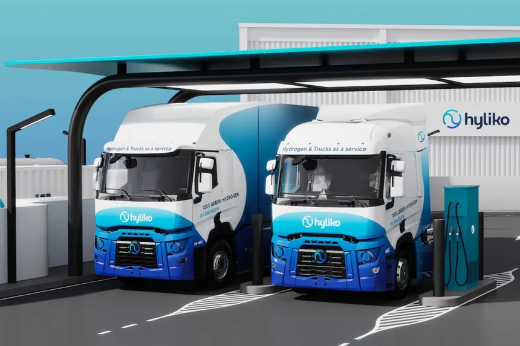
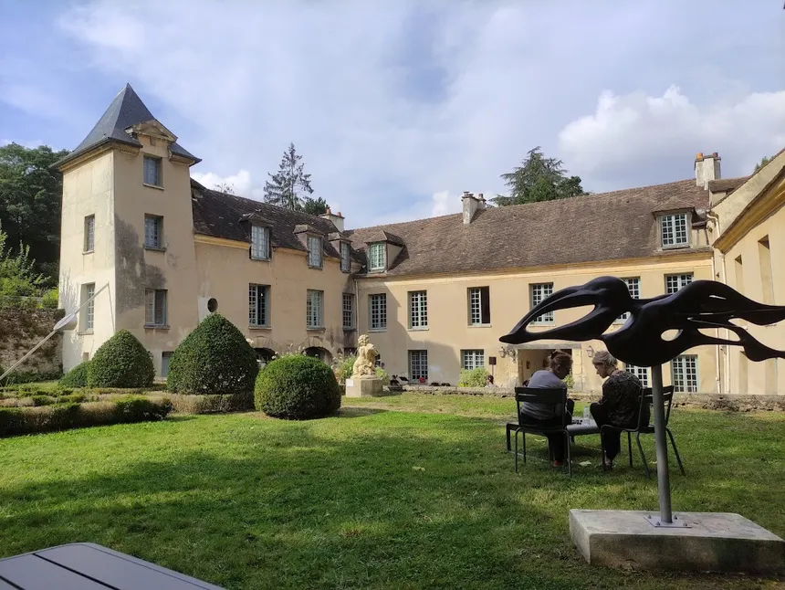
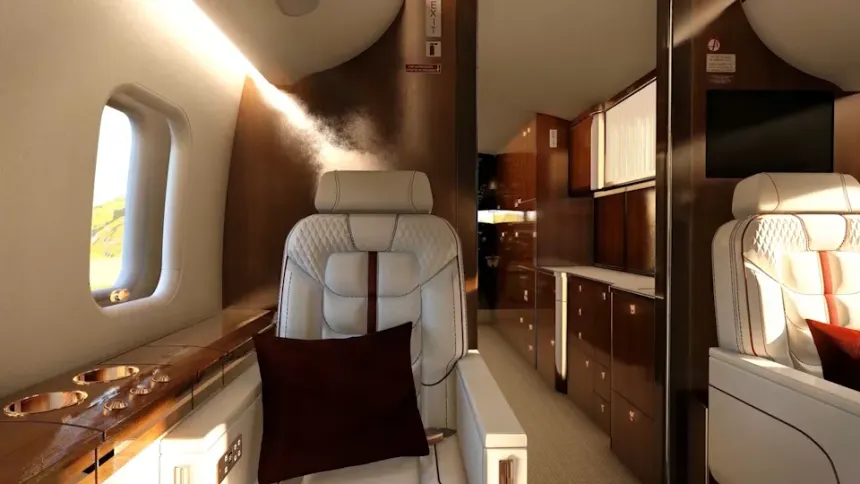
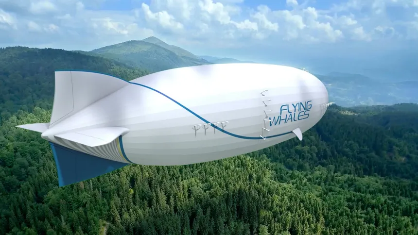

Dassault Systèmes est née en mille neuf cent quatre-vingt-un, issue d'une filiale de Dassault Aviation. Créée pour industrialiser et commercialiser un logiciel informatique conçu à l'origine par les ingénieurs de l'avionneur pour dessiner la voilure d'un avion de chasse, la jeune entreprise s'est appuyée sur un partenariat stratégique avec un géant américain de l'informatique pour diffuser mondialement son outil de conception assistée par ordinateur en trois dimensions.


Aujourd'hui, l'entreprise est un géant mondial du logiciel d'ingénierie, spécialisé dans la modélisation 3D et le suivi du cycle de vie des produits (PLM). À travers sa plateforme décisionnelle 3DEXPERIENCE, elle fournit aux industriels (aéronautique, automobile, santé, énergie) la capacité de créer des « jumeaux virtuels » pour simuler, tester et optimiser des produits ou des processus complexes avant même leur fabrication physique.

S'appuie sur les solutions Dassault Systèmes pour développer des camions hydrogène à pile combustible et proposer un service clé en main, intégré et évolutif.

Réinvente ses espaces publics grâce à leur jumeau virtuel et les simulations d’aménagement urbain, de flux de d'air et de chaleur, pour améliorer la qualité de vie de ses résidents.

Transforme la conception de ses équipements de cabine grâce à la mise en place de processus homogènes sur ses multiples sites et la centralisation des données.

Leur dirigeable hybride hélium-électrique prendra forme dans une usine spécialement construite à cet effet – le tout planifié, testé et optimisé dans l'environnement virtuel de 3DEXPERIENCE.